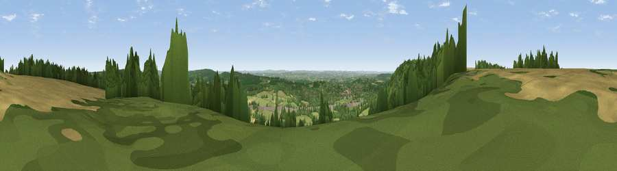

Viewpoint near Tatsfield
#18867 in England · top 4% of its area beats it · near Tatsfield · footpathWhere it is
The exact computed spot (TQ 40625 55675). Click the marker for map links.
Public access: a public right of way passes within 59 m of this spot. Computed from Natural England's CRoW access layer and OpenStreetMap rights of way — not the legal definitive map. Always verify locally.
The view, rendered

A 360° render of this exact spot computed from the terrain model, tree cover and land cover — summer colours, afternoon light, calibrated against photographs of famous viewpoints. Real trees, hedges and buildings will differ in detail.
The panorama
Grey silhouette: terrain skyline in each direction (720 bearings, Earth curvature and refraction included). Dashed green: skyline with trees (+15 m) and buildings (+8 m) as obstacles. Blue strip: how far the ground is visible on each bearing.
Where the view opens
Wedge length = distance to the farthest visible ground on that bearing (vegetation-aware). Rings at 10, 25 and 50 km.
What fills the view
45% woodland · 44% grassland · 8% cropland · 3% built-up
Angular shares of the visible panorama (visual magnitude), not map area. Landscape diversity 0.45 (0–1 Shannon).
Key numbers
More beautiful places nearby
The staircase of upgrades: each row has a higher view potential than everything closer. Driving times are estimates from straight-line distance, calibrated against real road routing — check an actual route before setting out.
| Place | Direction | Drive | Score |
|---|---|---|---|
| Viewpoint near Limpsfield | WSW · 1 km | ~4 min | 55.9 |
| Viewpoint near Limpsfield | WSW · 2 km | ~5 min | 64.0 |
| Viewpoint near French Street | SE · 8 km | ~15 min | 64.5 |
| Viewpoint near Shipbourne | E · 16 km | ~29 min | 66.2 |
| Viewpoint near Lower Kingswood | W · 17 km | ~30 min | 67.7 |
| Viewpoint near Coldharbour | WSW · 29 km | ~45 min | 70.0 |
| Viewpoint near Westmeston | SSW · 43 km | ~63 min | 81.1 |
| Ditchling Beacon | SSW · 43 km | ~63 min | 81.8 |
51.28286, 0.01500 · source: screening · position refined by local search. Computed location — check access rights before visiting.